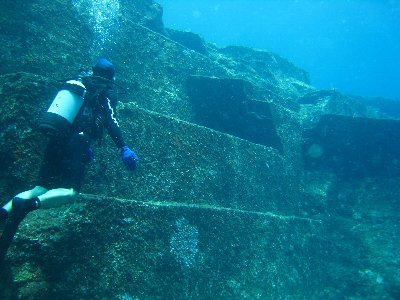
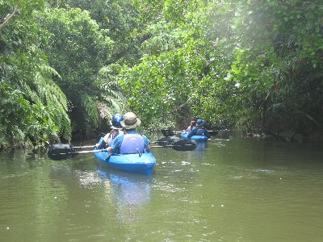
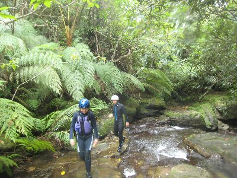

日本の端、与那国島 | 2012年9月 |
|---|---|
| 夏の沖縄一人旅も6年目。毎回台風が接近し（行く時期が悪い）「大丈夫か！」と心配になって大変です。 今年も離島に行きたくなって、今回はツアーに申込みました。早割で静岡空港から行っても良いのだけど、たまには羽田空港を見たくて羽田発の石垣島往復、一泊ホテル付きのパックツアーです。他には何も付いていません。フリーです。早割より安いけど新幹線代考えると、静岡空港からいくのとトントン位かな。 で、今年も出発間際に台風接近！しかも「近年に例が無い猛烈な台風」ですって。これは呪いか！ 那覇経由なのに、飛ぶその日に台風が那覇最接近！ 飛行機は欠航になれば、次の日でも振り替えできるけど、翌日に違う航空会社で与那国島まで飛ぶ予定の私。それはツアーとは別に早割で取っているので変更不可。つまり、乗り遅れはチケットをダメにすると言うことで・・・（キャンセル代が高い。しかも再購入は正規運賃） 旅行当日、不安を抱えながらも羽田へ。ネット情報では午前の便は全滅らしい。私の便は13時発。静岡空港便は昨日のうちに欠航が決定してました。静岡発着にしなくてよかった〜。 空港に着いて状況確認すると、私が乗る前の便から「条件付き運行」となってます。つまり「飛ぶけど、着陸できなかったら引き返すよ」ってこと。 ・・・・これは、たぶん行けるな。 思った通り、飛行機は無事に那覇に着き、乗り換えを経て石垣島へ。今日は石垣島宿泊です。那覇も午前中に台風が来ていたのか分からない位に晴れていてビックリ。台風が駆け足で過ぎ去ってくれたお陰だね。石垣空港は相変わらず滑走路が短くて、機長が「滑走路が短いため、急ブレーキを掛けますが心配なさらず」みたいなことを言うします。なんせ1500ｍしかないからね。しかし、石垣空港も来年（平成25年）の3月から新空港に移転し、普通の離島並みの2000ｍになるそうです。スカイマークも参入するらしく、これから価格競争が激しくなるかもね。私たちにとっては行きやすくなるかも。 翌日午前中に与那国島へ飛びました。飛行機を３回乗らないと行けない場所って、日本にそうそうないよ。（石垣直行便なら２回だけど） 長くなるから、ここからはちょっとハショッテいきますね。 | |
 ココが日本の一番西端！ |  島内の道路は結構綺麗です |
 Dr.コトーの撮影された診療所 |  この建物、ドラマのためだけに建てられたんだって |
| ＜与那国島＞ 日本で最西端の場所。台湾まで111㎞、石垣島まで117㎞と台湾の方が近い島です。天気がいいと台湾が見えるくらいに。テレビドラマの「Dr.コトー診療所」の舞台でもあります。 一番端っこに行ってみたい！Dr.コトー見てみたい！海底遺跡見たい！ そんな理由で一度は来てみたかった場所です。 | |
 与那国の南側は牧場の中を道が通っています だから、道路を馬が歩いているなんて事も |  日本で一番最後に沈む夕日 |
| ＞海底遺跡。その名のとおり、海底に「人の手で作ったんじゃないの」と言われているが、その実は分かっていない場所が有ります。これを見たくてダイビングのライセンスを取ったようなものですからね。って事でダイビングで行ってきました。 確かに岩を切りだしたような場所が、一ヵ所に固まっているんです。不思議です。しかも大きいです。本当かどうかはわからないけど、人が作ったと言っても信じます。 | |
|  海底遺跡と呼ばれている場所 |  割れ目のような所に潜っていきます |
| ＞宿泊。今回はゲストハウス・フィエスタにお世話になりました。一泊素泊まり2000円です。男女別の相部屋方式ですね。驚くのは、この家はオーナーの手作りだそうで。 3泊しましたが、泊まっている人たちと仲良くしゃべってました。やっぱり沖縄の宿はこうでなくっちゃ。 一泊目には、Dr.コトーを見て聖地巡礼に訪れたフランスの若い女性がいました。かなりオタクでした。スタッフと3人で夜遅くまでオタク話♪ その他にも、自転車で日本一周している人。やはり聖地巡礼に訪れているひと。ダイビングのガイドと飲みに行ったり、楽しかったです。 | |
 ゲストハウス：フィエスタさん |  こちらは西表島のモンスーンさんにて。朝焼け |
| ＜西表島＞ 後半は西表島へ。前回来た時は、台風の被害がひどく上陸時間1時間足らずという酷い有様だったので、今回はたっぷりと2泊です。西表島モンスーンさんに宿泊。ここはロケーション最高です。個室タイプですが、ハンモックがあったり、目の前の芝生が気持ち良かったり。モンスーンさんは各種アクティビティツアーもやってまして、それもお世話になっちゃいました。 ＞カヌー＆沢トレッキングツアー 西表島を丸ごと楽しもうというツアーで、カヌーを漕いでマングローブの川をのぼり、途中から川を歩いて上流の滝を目指します。川には深い場所が有って泳いだり、川床で寝てみたり。滝では飛び込みをしたり、漂ったりと、マッタリ自然と同化して、すげー心地いいです。 帰りの車に乗ったら土砂降りになって、その後晴れたら綺麗な虹が二重に出ました。感動です。 | |
|  アダナデ川をカヤックで |  ジャングルの中を沢トレッキング |
 途中で川床に寝てみたり |  ゴールのアダナデの滝 |
| ＞バラス島にも行く一日シュノーケルツアー バラス島とは、サンゴ礁の死骸で出来ている島です。死骸と言っても、石のように硬く白いサンゴで、周りの海は碧く、とっても綺麗な場所です。 あとは海亀が見られるポイント、鳩間島でランチを挟んで、鳩間島西側のサンゴポイントの三か所に行きました。それぞれが素晴らしく綺麗で感動です。 鳩間島ポイントでは、なんとかエイがつがいで泳いでいるのを見ました！ 鳩間島は海がとっても碧く、色々な青がある事に気づかされます。水色、コバルトブルー、蒼色。正直、写真で表現しきれない。（偏光フィルター持っていけばよかった。光の反射で青が上手く映ってない） バナリ島は、夜に星を見に行くツアーも有ったのですが、滞在中は夜になると曇ってきたので開催されませんでした。しかし、宿の前で、雲の切れ間から天の川が見ることが出来ました。とても綺麗です。ホタルも飛んでましたね。 今回も楽しい楽しい沖縄離島の旅。沖縄離島には、梅雨明けの7月頃が、台風も少なく条件がいいとか。ぜひ行ってみてほしい場所です。 | |
 虹が二重に見えてる♪ |  バラス島 |
 バラス島の海の中。下は珊瑚 |  鳩間島。ココの蒼さは感動モノです |
| 写真＆コメント べっしー | |